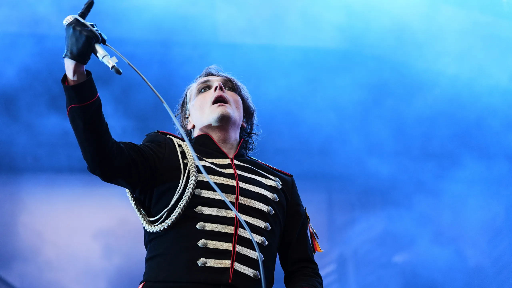

Galería



My Chemical Romance, también conocido oficialmente por sus siglas como MCR,[1] es un cuarteto estadounidense de pop punk y post-hardcore,[27] formado en 2001 en el estado de Nueva Jersey, e integrado en la mayor parte de su historia por el vocalista Gerard Way, el bajista Mikey Way y los guitarristas Ray Toro y Frank Iero; también Matt Pelissier y Bob Bryar fueron alguna vez los bateristas, y James Dewees el teclista. En marzo de 2013, la banda anunció su separación;[28] aunque tras casi siete años de inactividad, el 31 de octubre de 2019 anunciaron su reunión para una gira mundial que comenzaron el 20 de diciembre siguiente en Los Ángeles (California).[29
